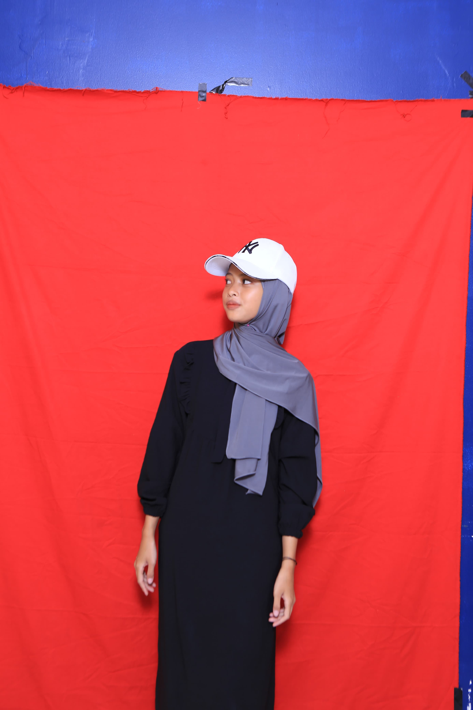

cv ats
NADZWA SALSABILAH
KP.cicayur kebun manggu Rt004/001,Tangerang Selatan, 2 Januari 2005 | +62 882 1229 3822 | sabilah@gmail.com
Tentang Saya
saya nadzwa salsabilah, saya seorang mahasiswa yang sedang belajar di areta informatics college. Saya memiliki pengalaman PKL sebagai QC (quality contro) selama 3 bulan, dana saya pernah bekerja di RSIA Gebang Medika sebagai resepsionis/pendaftaran selama 3 bulan dan pernah menjadi trainer pra ukk jurusan otkp
Kemampuan & Kompetesi
- Microsoft Office
- Microsoft Powerpoint
Pengalaman Kerja
PT.Sanken Argadwija (PKL)2022
QC(quality control)
- mengambil laporan pergudang setiap 3 hari sekali
- merapihkan laporan yang sudah di ambil
- mencatat model mesin yang sedang berjalan di produksi
RSIA Gebang Medika 2023
resepsionis/pendaftaran
- mendaftarkan pasiaen rawat inap dan rawat jalan
- membuatkan bpjs bayi
- mendaftarkan pasien usg
- mencetak surat rawat inap, jika ia mengunakan bpjs maka harus di cetakan sep
pendidikan
- SD NEGERI PB Kelapa Dua
- SPM NEGERI 2 Kelapa Dua
- SMK Siere Cendekia
- Kampus Areta Informatics College